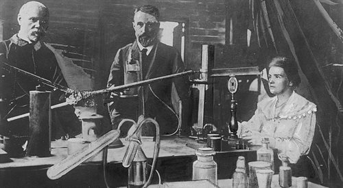

W lipcu 2022 roku przypadła 124. rocznica odkrycia polonu, w grudniu – radu. Aby tego dokonać, Maria Skłodowska-Curie osobiście przerzuciła łopatą i przebadała wraz z mężem Pierre'em całe tony skał zawierających nieznane wówczas nauce pierwiastki.
